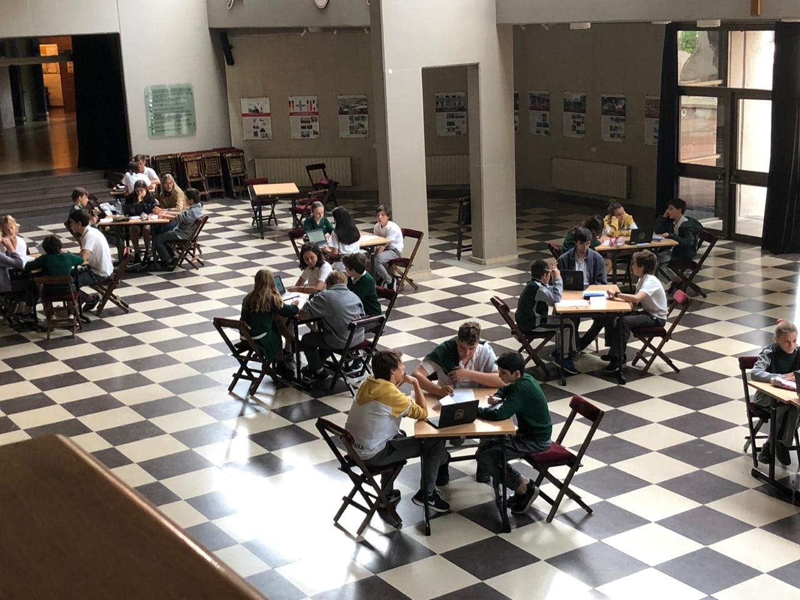
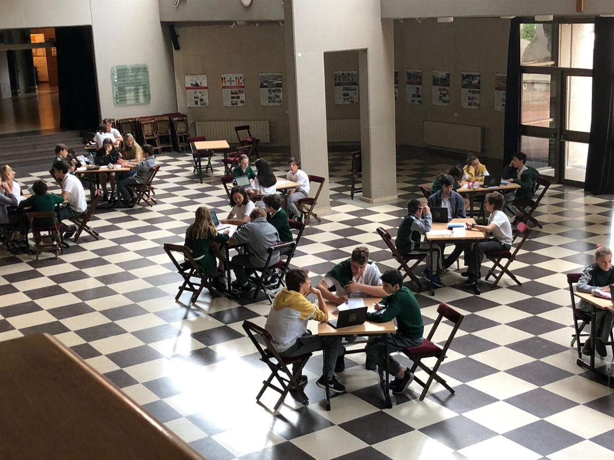
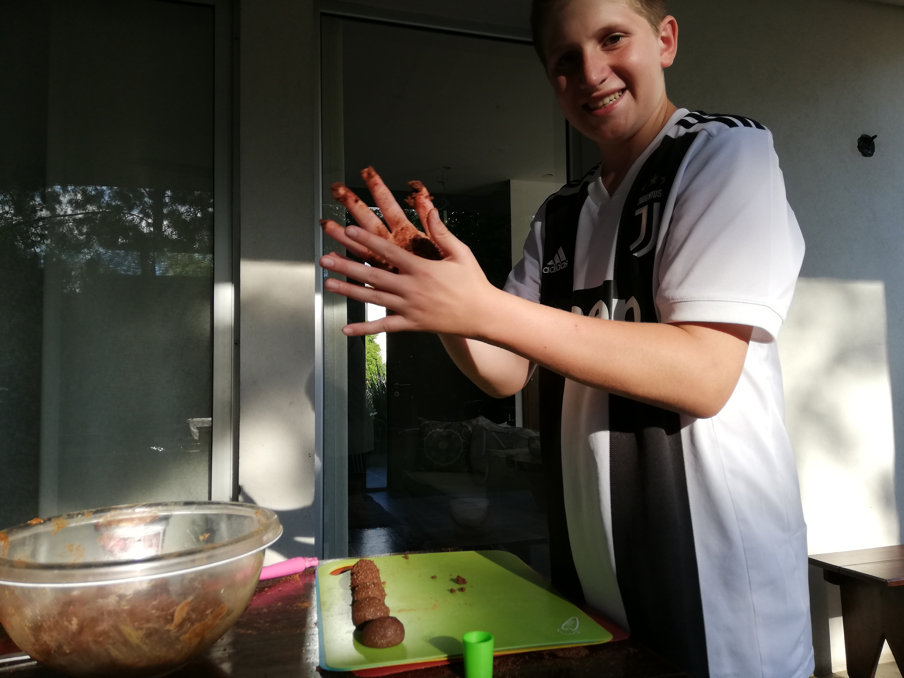
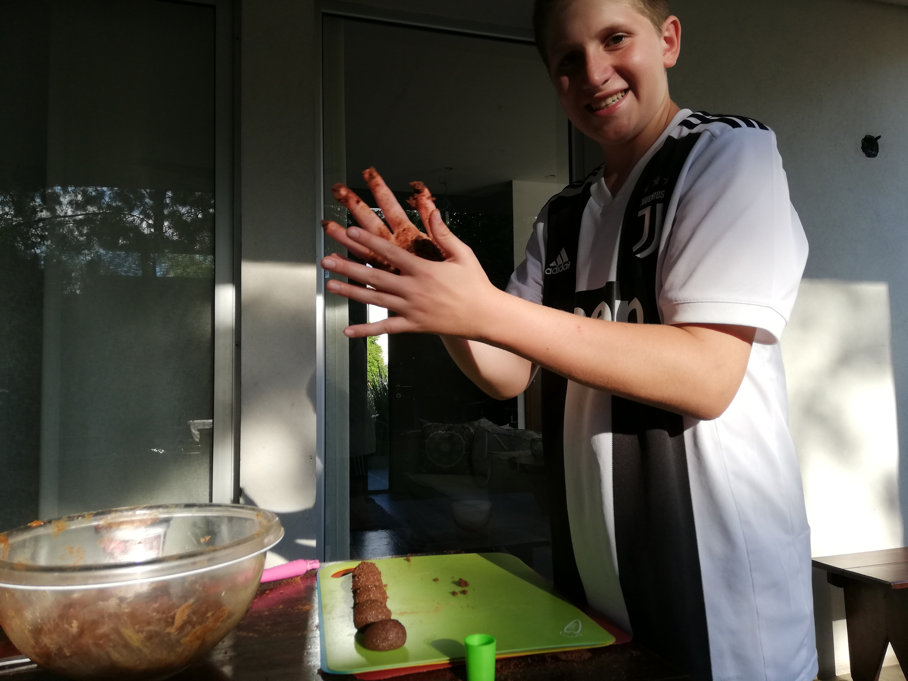

PORTFOLIO
En esta página de nuestro sitio web, queremos mostrarles las diferentes etapas de nuestro proyecto. Esperamos que lo disfruten.

Seleccion de recetas
Nosotros lo que hicimos con los menúes fue, que todos buscamos recetas en un libro de cocina.No fue tan dificil. Después decidimos tres recetas para cada menú y algunas las traducimos al inglés.

Encuentro con 4to.
Los chicos de 4to E tenían que contarnos a nosotros (1er año) información para nuestro proyecto,pero no se lo tuvieron que contar a todos. Algunas personas eran encargados de sacar fotos sobre lo que estaba haciendo tu grupo. En ese tiempo había dos partes, una parte les explicaban a todos y la otra a unos los ayudaban, que el alumno de diseño y estética tenía que empezar a hacer el modelo del logo y los demás(los otros dos alumnos ) seguir con el proyecto. Nosotros aprendimos un montón y nos divertimos.

Diseño del logo
Elegimos el color marrón porque impone elegancia, rusticidad y da hambre. Los dibujos de tenedor y cuchillo son el signo de la comida casera. Pensamos en un círculo para que sea más ordenado y para que tenga más forma de logo.(El logo fue diseñado por María F.Hecho por Micaela E. y con colaboración de Maria F.)


 


 


El encuentro con 6to año
Tuvimos 2 encuentros con los chicos de 6to. El primero estuvimos viendo el tema de mision y vision. Los chico de 6to me ayudaron muy bien y comprendí mucho el tema. El segundo encuentro estuvimos hablando y viendo las tablas de los costos de los menús. El tema lo entendí bastante bien y los chicos de 6to me explicaron muy bien. Los encuentros me gustaron mucho y me sirvieron para seguir con el proyecto.
Como hicimos el video?
Nosotros nos juntamos un miércoles. Aprovechamos que los tres teníamos extra y fuimos a la casa de Maria. Después de tomar el té empezamos, la mamá de María nos trajo los ingredientes.Tufa y Persi cocinaron y Maria grabo. Fuimos cambiando de roles ej: Persi grabó y Tufa y Maria cocinaron. Maria edito y Mica ayudo un poco editando. Mica no pudo venir por que se tuvo que ir a Jujuy. Cocinamos trufas de chocolate.